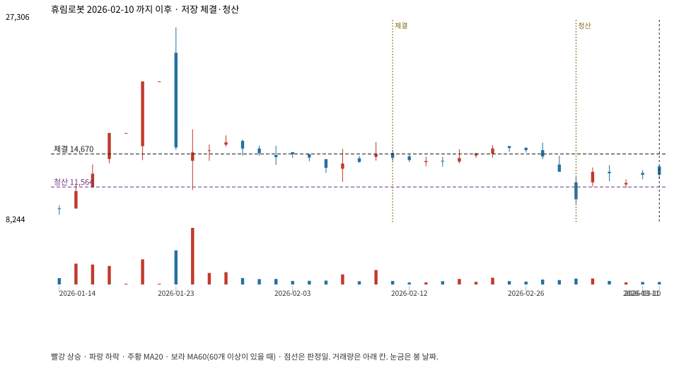

계좌를 다시 돌리지 않았다. 아래는 저장된 주문·체결·청산·비용·손익이다.

{
"case_id": "6c0a9b764504ad64",
"status": "closed",
"trade": {
"symbol": "090710.KQ",
"signal_date": "2026-02-10",
"quantity": 326,
"entry": 14670,
"stop": 11570,
"target": 26600,
"planned_risk": 1021038.2640899995,
"reserved_cash": 4787202.42,
"fill": {
"date": "2026-02-11",
"price": 14670,
"fee": 4782.42
},
"exit": {
"date": "2026-03-04",
"price": 11564.215,
"reason": "stop",
"net_pnl": -1021038.2640900002,
"ambiguous_bar": false
}
},
"cost": "research fee 10bp each side, slippage 5bp; amounts below are the stored ledger, not a new run",
"chart": "c\/6c0a9b764504ad64.svg"
}